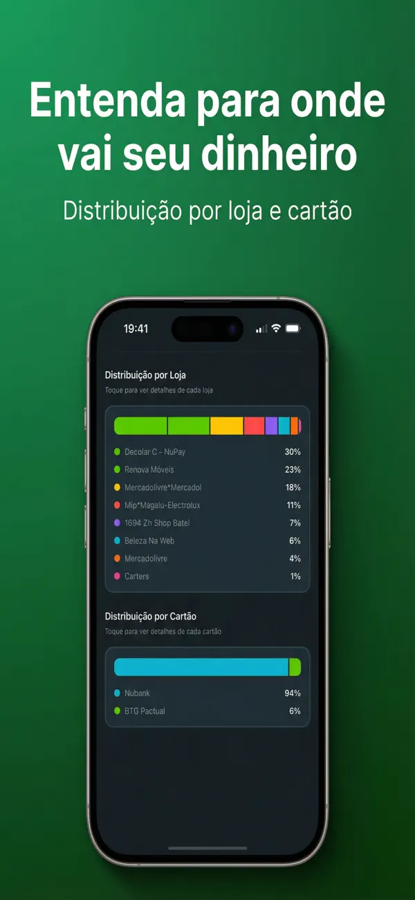

O app para controlar as parcelas do cartão de crédito
O Parceladinho é o app para controlar parcelas que faltava: tire uma foto da fatura (ou envie o PDF) e a IA extrai todas as suas compras parceladas — quantas parcelas faltam, quanto você ainda deve e quanto vai pagar no próximo mês. Um app para organizar parcelas de todos os seus cartões, direto no iPhone e sem conectar ao banco.
- 📸 A IA lê sua fatura
- 🔒 Sem conectar ao banco
- 📱 Dados só no seu iPhone
- 🎁 3 dias de teste grátis

O aplicativo que lê a fatura do cartão por você
Nada de digitar compra por compra. O controle de fatura do cartão de crédito acontece em três passos — a inteligência artificial faz o trabalho pesado.
Envie a fatura
Tire uma foto da fatura impressa, escolha uma imagem da galeria ou envie o PDF baixado no app do banco. Funciona com Nubank, Inter, C6, Itaú e qualquer cartão brasileiro.
A IA identifica as parcelas
Em segundos, a inteligência artificial encontra cada compra parcelada: loja, valor da parcela, parcela atual e total (aquele 3/12 da fatura).
Veja tudo no dashboard
Total comprometido, quanto vem no próximo mês, quantas parcelas faltam de cada compra e quando você se livra de cada uma.
Controle de parcelas completo, sem digitar nada
Feito para quem parcela no cartão de crédito e quer enxergar o todo: o que está aberto, o que já foi pago e o que ainda vem pela frente.
Dashboard inteligente
Total comprometido em parcelas abertas e quanto você vai pagar no próximo mês — os dois números que importam, na primeira tela.
Controle de parcelas pagas
Barra de progresso visual para cada compra: quantas parcelas você já pagou, quantas faltam e alerta quando uma compra está quase quitada.
Projeção mês a mês
Veja as parcelas futuras do cartão em um gráfico de projeção mensal. Toque em qualquer mês para ver o que vence nele — e descubra quando você fica livre.
Organize do seu jeito
Um app para organizar parcelas de verdade: filtre por cartão, status ou loja, edite valores e datas, adicione compras manualmente e remova com um gesto.
Controle de fatura do cartão de crédito
Importe a fatura por foto, imagem ou PDF. A cada mês, envie a nova fatura e o app atualiza o andamento de todas as compras parceladas.
Lembretes automáticos
Configure um lembrete mensal para nunca esquecer de enviar a fatura e manter o controle das parcelas sempre em dia.
Controle as parcelas de vários cartões em um só lugar
O app do Nubank só mostra o Nubank. O do Inter, só o Inter. O Parceladinho junta as compras parceladas de todos os seus cartões num painel único, separadas por cartão — e soma o impacto total no seu orçamento.
- Nubank, Inter, C6, Itaú, Bradesco, Santander e outros
- Total por cartão e valor mensal de cada um
- Distribuição dos gastos por loja e por cartão
Controle financeiro sem conectar ao banco
Nada de Open Finance, senha do banco ou sincronização na nuvem. Você envia a fatura, a IA organiza e pronto: seus dados financeiros ficam armazenados apenas no seu iPhone.
- Nenhuma conexão com sua conta bancária
- Nenhum dado compartilhado com terceiros
- Privacidade em primeiro lugar, sempre
Veja o Parceladinho por dentro
O visual de quem finalmente sabe quanto deve, para quem e até quando.



Guias para dominar as parcelas do cartão
Respostas diretas para as dúvidas mais comuns sobre compras parceladas — do jeito manual ao automático.
Como ver compras parceladas no cartão de crédito
Onde encontrar suas compras parceladas na fatura, quantas parcelas faltam e quanto ainda falta pagar — banco a banco.
Ler guia →Como ver compras parceladas no Nubank
Passo a passo no app do Nubank: parcelas restantes, fatura em PDF e como juntar com os outros cartões.
Ler guia →Como ver compras parceladas no Itaú
Onde ficam as compras parceladas no app do Itaú e como saber quantas parcelas faltam em cada uma.
Ler guia →Como ver compras parceladas no Inter
Como encontrar as parcelas no app do Banco Inter, baixar a fatura em PDF e consolidar tudo.
Ler guia →Planilha de controle de parcelas do cartão
Modelo grátis para Excel e Google Sheets, versão para imprimir — e a planilha que se preenche sozinha.
Ler guia →Melhor app para controlar parcelas em 2026
Apps de finanças, planilhas e apps do banco comparados: o que cada um resolve e onde ficam devendo.
Ler guia →Fatura do C6 Bank em PDF: qual é a senha e como baixar
A senha do PDF da fatura do C6 Bank, o passo a passo para baixar o arquivo e o que fazer com ele.
Ler guia →Parcelei demais, e agora?
Plano prático em 5 passos para retomar o controle quando as parcelas comprometeram o salário.
Ler guia →Perguntas frequentes
Tudo o que você precisa saber sobre o Parceladinho e o controle de parcelas do cartão.
Como saber quantas parcelas faltam no cartão de crédito?
A fatura mostra apenas a parcela do mês (ex: 4/10), então é preciso subtrair a parcela atual do total de cada compra. No Parceladinho, basta tirar uma foto da fatura: a IA identifica cada compra parcelada e mostra quantas parcelas faltam e quanto ainda falta pagar, com barra de progresso por compra. Saiba mais
Como ver todas as minhas compras parceladas no cartão?
No app do banco, procure a fatura detalhada e localize as compras marcadas com a numeração da parcela (ex: 3/12) — mas cada banco só mostra o próprio cartão. Para ver todas de uma vez, fotografe ou envie o PDF da fatura no Parceladinho e a IA extrai loja, valor e parcelas restantes de cada compra. Saiba mais
Existe app para controlar parcelas de vários cartões juntos?
Sim. O Parceladinho consolida as parcelas de todos os seus cartões — Nubank, Inter, C6, Itaú e outros — em um único painel. Você importa cada fatura por foto ou PDF e vê o total comprometido, quanto vai pagar no próximo mês e as parcelas organizadas por cartão. Saiba mais
Como fazer controle de parcelas no Excel?
Crie colunas para loja, valor da parcela, parcela atual, total de parcelas e mês de término, e some o valor restante com uma fórmula simples. Nosso guia traz um modelo grátis pronto para copiar — e a alternativa automática: fotografar a fatura e deixar a IA do Parceladinho preencher tudo sozinha. Saiba mais
Como funciona a leitura da fatura por foto ou PDF?
Você tira uma foto da fatura impressa ou envia o PDF baixado no app do banco. A IA do Parceladinho identifica cada compra parcelada — loja, valor, parcela atual e total — e monta seu dashboard em segundos, sem digitar nada. Saiba mais
Como saber quanto ainda devo no cartão de crédito?
Some as parcelas futuras de cada compra parcelada — valor da parcela multiplicado pelas parcelas restantes. O Parceladinho faz esse cálculo automaticamente a partir da foto da fatura e mostra o total comprometido em parcelas abertas na primeira tela. Saiba mais
Como ver parcelas futuras no cartão de crédito?
Os apps dos bancos mostram as parcelas futuras fatura a fatura, uma de cada vez. Para ver todas juntas, o Parceladinho monta uma projeção mês a mês a partir da foto da fatura: quanto você vai pagar em cada mês e em que mês cada parcela acaba. Saiba mais
O Parceladinho precisa conectar na minha conta do banco?
Não. O Parceladinho não usa Open Finance nem pede senha do banco: você só fotografa ou envia o PDF da fatura. Todos os dados ficam armazenados apenas no seu iPhone. Saiba mais
O Parceladinho funciona com Nubank, Inter e C6?
Sim. O app lê faturas de qualquer cartão brasileiro — Nubank, Inter, C6, Itaú, Bradesco, Santander e outros — por foto ou PDF, e organiza as parcelas separadas por cartão no mesmo painel. Saiba mais
Parcelei demais no cartão, por onde eu começo?
O primeiro passo de qualquer plano é enxergar tudo o que você deve. Fotografe suas faturas no Parceladinho para mapear todas as parcelas em minutos, veja quanto do seu orçamento está comprometido e acompanhe mês a mês até zerar. Saiba mais
Quanto custa o Parceladinho?
O Parceladinho é grátis para baixar e todos os recursos são desbloqueados pela assinatura Parceladinho Pro, com 3 dias de teste grátis. Os planos e valores atuais aparecem direto no app, e você pode cancelar a qualquer momento pela App Store. Saiba mais
Qual o melhor app para controlar parcelas do cartão?
Apps de finanças gerais controlam gastos, mas não mostram parcelas restantes por compra; planilhas exigem digitação manual. O Parceladinho é dedicado a parcelas: lê a fatura por foto ou PDF com IA e mostra quantas parcelas faltam, quanto ainda deve e quando cada uma acaba. Saiba mais
Descubra hoje quanto você ainda deve em parcelas
Baixe o Parceladinho, tire uma foto da sua fatura e veja em segundos quantas parcelas faltam, quanto vem no próximo mês e quando você se livra de tudo.
Grátis para baixar · 3 dias de teste grátis · cancele quando quiser